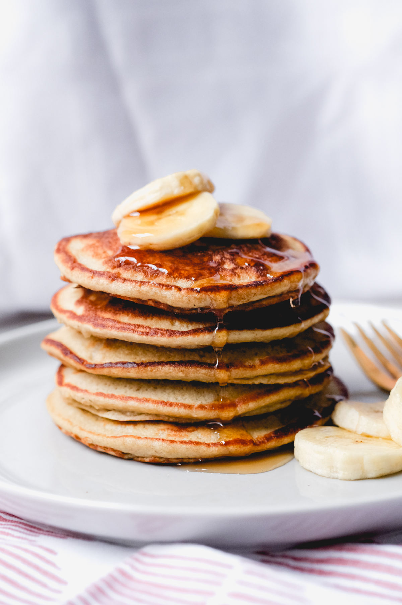

Charlynn's Recipe Book
With her favorite dishes!
Pancakes

It truly does feel like making a cake, but without the oven. The creamy syrup is an extra topping when I have time, but it always tastes good! :D
Ingredients:
- 1 ½ cups of Flour
- 2 tablespoons of Sugar
- 1 tablespoon of Baking Powder
- 1 ¼ cups of Milk or Non-Dairy Milk
- 1 Egg
- 5 tablespoons of Butter
- 2 teaspoons of vanilla extract
Instructions:
- Prepare the butter: Melt it and set it aside to cool for a bit.
- Combine dry ingredients in a medium bowl.
- Whisk the flour, sugar, baking powder, and salt.
- Combine wet ingredients: whisk the milk, egg, melted butter, and vanilla extract in a separate bowl.
- Create a well in the center of the mixture of the dry ingredients and pour the milk misture in.
- Gently whisk until the flour is incorporated and looks like a thick batter
- Preheat a skillet over medium heat.
- Brush the skillet with melted butter.
- Scoop the batter onto the skillet using a ¼ cup measure.
- Gently spread each pancake into a 4-inch circle.
- After 1 or 2 minutes, the edges will look dry and bubbles will form on the surface so flip the pancake.
- Cook for another 1 to 2 minutes until they are lightly browned.
- Enjoy!
Home